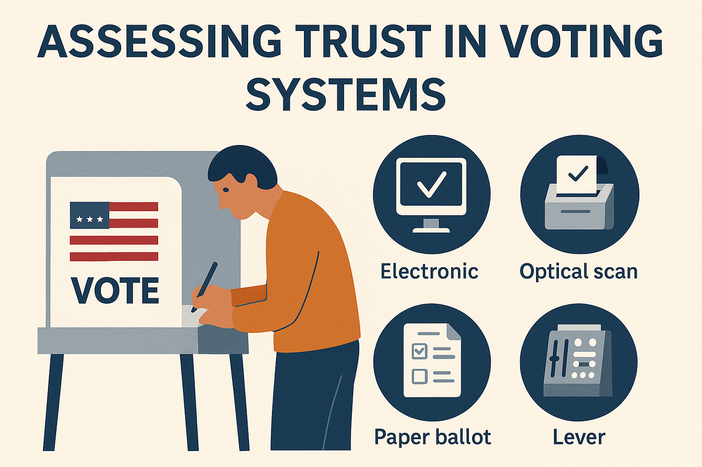
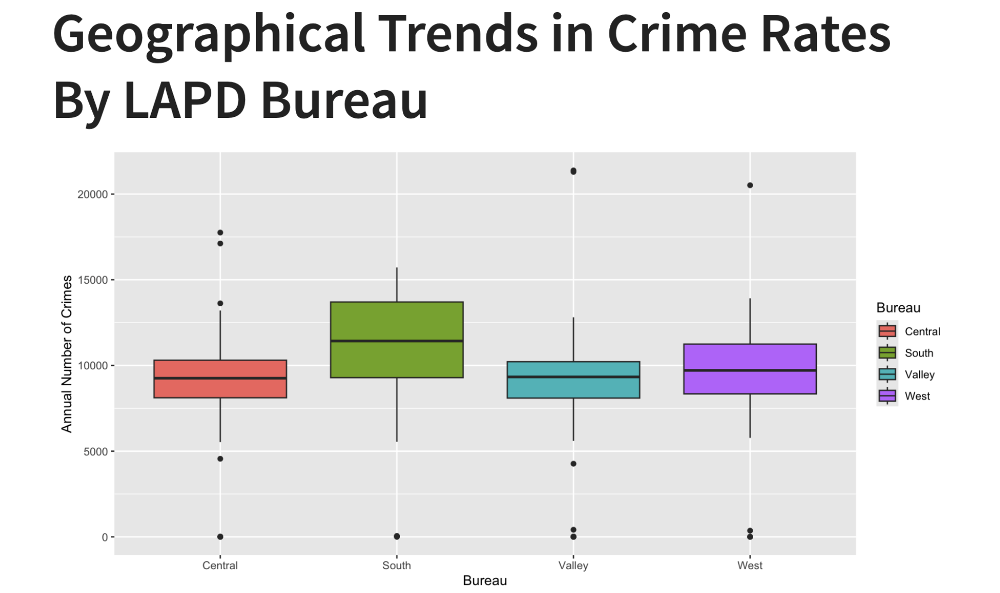
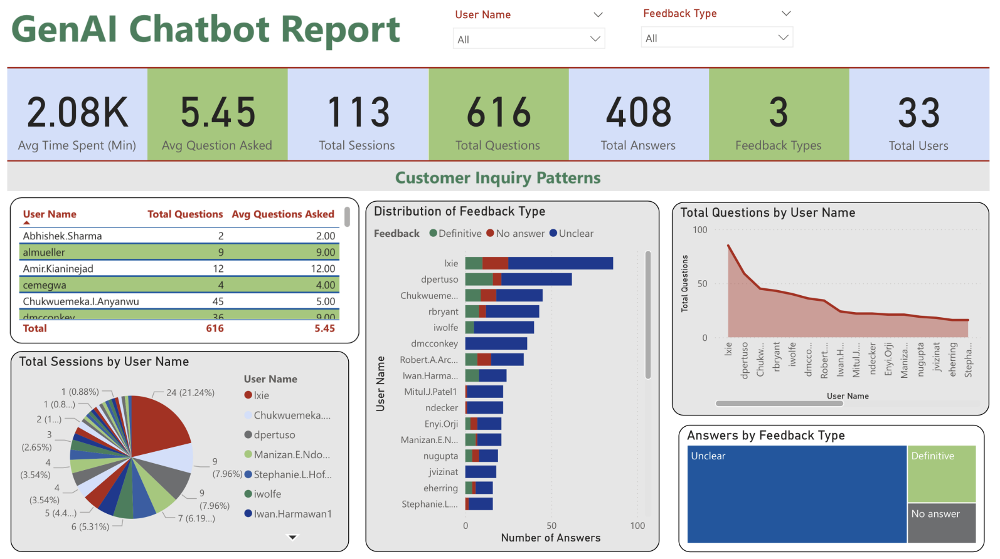

Recent Projects

Voting Trust Analysis
Conducting research on voting systems to evaluate user trust, credibility, and usability. Through human subject testing and survey tools like SUS, NASA-TLX, and TVS, the study compares electronic, optical scan, paper ballot, and lever machines to identify the most secure, trustworthy method for fair and reliable elections.
Global Happiness Trends
Analyzed how GDP and social conditions affect national happiness scores. Found GDP has a stronger impact on happiness in non-Western countries and low-social-condition regions. In Western countries, other factors like public health and social support seem more influential. Economic growth boosts happiness most when paired with strong social infrastructure.

Crime Pattern Modeling
Analyzed spatiotemporal trends in Los Angeles homicides using data from 2010–2024. Assessed impacts of unemployment, evictions, income, and police funding on crime. Found that homicide rates rose post-pandemic, especially in wealthier areas, and were influenced by geography more than enforcement. Models revealed that economic instability and housing insecurity are stronger predictors of crime than budget increases.

Chatbot Analytics Consulting
Analyzed over 10,000 GenAI chatbot interactions using Power BI dashboards developed during my internship. Tracked user sessions, question volume, answer clarity, and sentiment across 33 users and 113 sessions. Used Power Query and DAX to uncover engagement patterns, identify unclear responses, and highlight areas for improvement. Insights supported strategic enhancements to chatbot design and improved reporting efficiency.